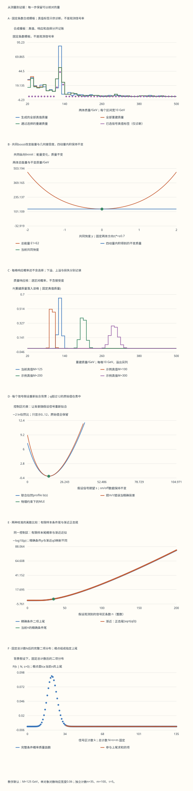

本页目录
粒子 V · 对撞机、探测器与统计证据
前置：QCD与强子、味混合与中微子。需要四向量、概率分布和一元求导；似然的多参数部分会在本页逐步推导。
完成后你应能：从测量对象重建不变质量；解释分辨率、校准与接受度的不同作用；利用控制区约束背景；区分有限样本检验、渐近近似和多重搜索；明确每个结论依赖的实验假设。
探测器看到的是留下的信号；粒子性质需要重建和检验
屏幕上的一个峰并不自带“新粒子”标签。我们先从轨迹、能量沉积等读数重建对象，再计算质量等变量，最后比较不同物理假设预测的分布。每一步都可能丢失信息、引入偏差，也提供可以独立校准的量。
本页实验分成两个明确的教学设置。第一部分生成有真值标签的固定条数模板，用来观察四动量、响应和选择；第二部分单独指定信号区与控制区的观测计数，用来研究推断。改变模板中的“信号条数”不会改变下方计数似然。这种分开能避免把模拟里已经知道的答案，当成数据本身告诉我们的结论。
1. 束流能量、部分子碰撞和可见末态
在质子对撞中，硬散射的入射对象通常是携带动量份额 \(x_1,x_2\) 的部分子。忽略质子质量、取共线入射时，部分子质心能量满足 \(\hat s=x_1x_2s\)；这里 \(s\) 是两束质子的总质心能量平方。即使每次束流能量相同，硬散射能量也会变化。
对适用的硬过程，可示意写成因子化形式
\(f_a\) 是部分子分布，\(\hat\sigma_{ab}\) 是相应硬过程的截面；因子化尺度 \(\mu_F\) 和重整化尺度 \(\mu_R\) 在有限阶计算中留下理论不确定度。它还不是探测器输出：辐射、强子化、衰变和探测器响应都会影响重建对象。喷注算法和选择条件也是观测量定义的一部分。
一个有用的顺序是“硬散射预测 → 粒子级末态 → 探测器信号 → 重建对象 → 选择后的数据”。理论和数据比较必须约定处于哪一层，以及如何连接两层。本页的两对象模板直接从理想末态开始，不模拟部分子分布、喷注簇射或强子化。
2. 为什么横向量特别有用
束流沿 \(z\) 轴。入射部分子的纵向动量份额未知，但理想共线碰撞的初始总横动量为零；这使横动量平衡成为有用线索。真实分析还须处理初态辐射、束流效应、额外碰撞及未完全测量的能量。
用 \(p_T=\sqrt{p_x^2+p_y^2}\)、方位角 \(\phi\)、快度 \(y=\frac12\ln[(E+p_z)/(E-p_z)]\) 描述对象。赝快度 \(\eta=-\ln\tan(\theta/2)\) 只依赖方向。只有无质量极限才有 \(y=\eta\)。 对质量不能忽略的对象，应使用 \(E=m_T\cosh y\)、\(p_z=m_T\sinh y\)，其中 \(m_T=\sqrt{m^2+p_T^2}\)。
本实验的两个对象按无质量处理，四动量按 \([E,p_x,p_y,p_z]\) 保存：
共同纵向boost使每个快度增加同一个数，横动量与方位角保持不变。两对象的快度差也不变；但它们可能被推到探测器覆盖范围之外。运动学不变量和探测器接受度是两种不同的性质。
3. 不变质量：从四动量内积推导，而不从峰形猜测
对两个无质量对象，\(m_{12}^2=(p_1+p_2)^2=2p_1\cdot p_2\)。把上一节的分量代入，用 \(\cosh a\cosh b-\sinh a\sinh b=\cosh(a-b)\)，得到
这不是额外的经验公式，而是同一个四向量内积的另一种写法。实验同时保存两种计算，便于核对符号、角度约定和数值舍入。若对象有不可忽略的质量，则要保留相应质量项并使用快度。
自己检查：取 \(p_{T1}=p_{T2}=50\) GeV，\(\eta_1=\eta_2=0\)，\(\Delta\phi=\pi\)。再整体施加 \(y=1\) 的纵向boost，质量和总能量分别怎样变化？
详解1：总能量可以变化，不变质量保持100 GeV
原来 \(m^2=2(50)^2[1-(-1)]=10000\) GeV²，所以 \(m=100\) GeV，总能量也是100 GeV。boost后两个赝快度都为1，差仍为0，所以同一质量公式仍给100 GeV。
总四动量变为 \((100\cosh1,0,0,100\sinh1)\) GeV，总能量约154.308 GeV，纵向动量约117.520 GeV。其内积仍是 \(100^2(\cosh^21-\sinh^21)=10000\) GeV²。这里不变的是内积，不是总能量。若选择要求 \(|\eta|<0.8\)，原事件通过而boost后的事件不通过，质量不变也不能保证被记录。
实验的共同boost对照固定两体方向 \(\eta^*=\pm0.7\)、\(p_T=M/(2\cosh0.7)\)；扫描共同快度 \(-2\) 到2。模板事件的方向则从另一套明确的分布生成，不要把这条对照曲线误当模板里每条事件的轨迹。
4. 探测器怎样测量：每种读数约束什么
带电粒子在磁场中的弯曲帮助测量动量与电荷符号。对均匀轴向磁场，垂直磁场的轨迹半径近似满足 \(p_T[\mathrm{GeV}/c]\simeq0.2998\,|q/e|\,B[\mathrm T]R[\mathrm m]\)。追踪器实际拟合多点轨迹，同时处理材料中的多重散射、能损和对准误差。高动量轨迹曲率很小，测量微小弯曲会更困难。
量能器通过簇射和能量沉积估计能量。电磁与强子响应、非补偿性、死材料和泄漏等因素都可能影响结果。常见分辨率参数化 \(\sigma_E/E=a/\sqrt{E}\oplus b\oplus c/E\) 是选定能量单位与适用范围中的经验表达，\(\oplus\) 表示平方和开根号；它不是所有探测器通用的精确公式。缪子系统、粒子鉴别和时间信息还提供互补约束。原理与具体实现可查 PDG加速器实验探测器综述。
缺失横动量定义为重建可见对象总横动量的负值：
中微子可以产生真实的可见动量不平衡；测量偏差、未覆盖区域和错误重建同样可以。本实验的两体真值横动量平衡，但两个响应不同就会产生非零重建缺失横动量，完全不需要加入不可见粒子。
详解2：两个背对背对象的失配就能产生缺失横动量
若真值为 \((p_x,p_y)=(50,0)\) 与 \((-50,0)\) GeV，可见总横动量为零。若重建响应分别为1.1和0.9，测量得到 \((55,0)\) 与 \((-45,0)\) GeV，总和为 \((10,0)\) GeV，故缺失横动量为 \((-10,0)\) GeV，模长10 GeV。
这说明一个非零数值只表达“所计入的可见横动量没有平衡”。要解释原因，需要对象质量标准、校准、额外活动、控制样本和完整背景模型。反过来，某个真实过程含有不可见粒子，也不保证每条事件都有很大的缺失横动量，多个不可见动量可能互相抵消。
5. 正响应模型：pT无偏为何仍能造成质量偏差
为避免简单高斯扰动给出负动量，本实验取独立标准正态数 \(z_1,z_2\)，对每个对象使用正响应
\(r\) 是单对象响应对数的标准差，由滑块整数除以100得到；\(c\) 是共同校准百分比。响应自身的相对标准差是 \(\sqrt{e^{r^2}-1}\)，并不严格等于 \(r\)。由于 \(E[e^{rz}]=e^{r^2/2}\)，这里 \(E[R_i]=1\)。\(g=1\) 时每个 \(p_T\) 的均值无偏。
本模型保持方向不变，所以由质量公式直接得到 \(m_{\rm rec}=gM\sqrt{R_1R_2}\)。于是
展宽、共同能标移动和非线性变换的均值偏移已经是三件不同的事。上述质量分布还假定两个响应独立、角度精确且没有施加选择；真实探测器可能需要相关响应、角分辨率和非高斯尾。
详解3：逐项推导质量的均值和中位数
\(\ln R_i=rz_i-r^2/2\)，故 \(\ln m=\ln(gM)+r(z_1+z_2)/2-r^2/2\)。独立性给 \(\operatorname{Var}(z_1+z_2)=2\)，所以对数方差是 \(r^2/2\)。正态分布的中位数等于均值，取指数得到质量中位数 \(gM e^{-r^2/2}\)。
若 \(\ln X\sim\mathcal N(\mu,\sigma^2)\)，则 \(E[X]=e^{\mu+\sigma^2/2}\)，代入得到 \(gM e^{-r^2/4}\)。这也可从 \(E[\sqrt{R_1R_2}]=E[\sqrt{R_1}]E[\sqrt{R_2}]\) 推导。只有独立时最后一步才能拆开。
例如 \(r=0.2,g=1,M=125\) GeV 时，均值为 \(125e^{-0.01}\simeq123.756\) GeV，中位数为 \(125e^{-0.02}\simeq122.525\) GeV。有限模板的样本均值还会有抽样波动，不能要求它精确等于总体期望。
6. 响应矩阵、接受度和丢失的事件
对真值质量 \(M_j\)，响应矩阵元素可定义为 \(R_{ij}=P(m_{\rm rec}\in I_i\mid M_j)\)。本实验的质量区间是 \([20,500)\) GeV内48个宽10 GeV的格，另保留下溢和上溢。对数正态核用累计分布在格边界的差精确积分；\(r=0\) 时退化为位于 \(gM_j\) 的点质量，不能继续除以零宽度。
实验另施加严格条件：两个对象均满足 \(|\eta|<\eta_{\max}\) 且 \(p_T^{\rm rec}>10\) GeV。这会改变分布和通过率。响应核图尚未包含这些条件，所以不要把它直接乘模板总条数后当成已选事件预测。一般可以定义联合矩阵 \(A_{ij}=P(m_{\rm rec}\in I_i,\text{通过选择}\mid M_j)\)，将损失事件列为额外输出类别，或使可见列和等于相应效率。
简化的预测计数可以写成 \(\mu_i=\sum_j A_{ij}t_j+b_i\)。\(t_j\) 是真值层的期望计数，\(b_i\) 是重建层背景；若使用 \(\mathcal L\sigma_j\) 替代 \(t_j\)，必须约定积分亮度、截面、分支比和相空间范围。\(\mu_i\) 才是统计模型的均值，模拟事件的固定条数本身不必等于它。
自己检查：若响应矩阵所有可见格的概率只加到0.85，这一定是程序算错了吗？
详解4：先确定矩阵是否把损失包含在定义内
若 \(R\) 只表示质量响应，并把下溢和上溢都算入，完整条件概率总和应为1。本实验正是这样核对核的归一化。若只加图中的20至500 GeV部分，剩余概率可以在图外，不能重新归一化后假装它没有发生。
若 \(A\) 还包含选择条件，可见格列和为0.85可以表示85%的总效率，另外15%未通过选择或落在未列出的区间。必须明确这15%在哪里，并避免再乘一次相同效率。若把每列都强制归一化为1，却仍称其包含效率，就会抹去事件损失。实际反演或展开还涉及不适定性、正则化和完整协方差，可参见 PDG统计学综述的展开讨论。
模板背景取20至500 GeV内正规化的截断指数分布，通过逆累计分布生成；没有把超过边界的样本硬压在某个质量上造成人工峰。每个事件固定消耗四个伪随机数，随机流和真值标签均可下载。
分箱统一采用左闭右开区间。浮点计算可能把理论上恰好等于100的质量算成99.99999999999999；只有距离边界不超过 \(128\epsilon\max(1,|m|)\)（数值质量以GeV表示）的分类值才对齐到边界，\(\epsilon=2^{-52}\)。原始四动量、质量和微调量仍完整保留，这个机器精度规则不改变物理响应。诊断窗口也采用同样规则，并且只统计模板。
7. 控制区：背景期望是参数，观察次数是数据
现在开始一个独立的计数实验。设信号区观察到 \(n\) 条，控制区观察到 \(m\) 条，信号期望为 \(s\ge0\)，信号区背景期望为 \(b\ge0\)。控制区被假定不含信号，且其背景期望为 \(\tau b\)，其中 \(\tau>0\) 精确已知。两区独立时，联合似然为
这里两个Poisson项相乘，不是相加。\(\ell\) 的“常数”只指固定数据下与参数无关的阶乘项。计算采用 \(0\ln0=0\) 的连续约定；若正计数对应零均值，则该模型给零概率，\(\ell=-\infty\)。
控制区告诉我们 \(b\) 的信息，却不让 \(b\) 突然变成精确常数。把 \(m/\tau\) 直接代入并冻结，会丢掉有限控制区的计数不确定度。若 \(\tau\) 有不确定度、控制区有信号污染或两区不独立，还要扩展联合模型。这些假设可对照 Cowan等的计数实验示例，式94至97 与 PDG统计学综述的控制测量及profile似然。
详解5：控制区零事件为什么仍允许正背景
\(P(m=0\mid b)=e^{-\tau b}\)。例如 \(\tau=1,b=1\) 时，观察到零条的概率约0.368，并不罕见；零观测不等于零期望。只有额外的独立知识把背景精确固定为零，才是另一种“已知零背景”的模型。
在本实验 \(n=8,m=0,\tau=1\) 的预设中，联合模型在 \(s=0\) 下取 \(b=4\)，使两区期望都是4；这不是最优全模型，但给出非零概率。错误固定 \(b=m/\tau=0\) 后，\(s=0\) 对 \(n=8\) 的概率变成零，似然比发散。表中把这个错误对照保存为null及“不可能事件”状态，而不画成一个任意的大数。
8. Profile似然：每个信号假设都重新拟合背景
在物理约束 \(s,b\ge0\) 下，联合最大似然估计为
本实验的曝光比由整数 \(t_\tau\) 给出，\(\tau=t_\tau/10\)，因此先用整数交叉乘积 \(n t_\tau\le10m\) 判断是否在 \(s=0\) 边界，再计算浮点似然。例如 \(n=55,m=484,t_\tau=88\) 满足精确等式，信号估计严格为0；不能由 \(n-m/\tau\) 的微小舍入残差把它标成内部点。
后一种情况的最优点在 \(s=0\) 边界。观察到比背景估计更少的事件，不应强行报告一个负的信号期望；但亏损本身仍是数据，不能删除。
固定某个 \(s\) 时，让背景取使 \(\ell\) 最大的 \(\hat b(s)\)，称为profile。令内部驻点的导数为零，\(n/(s+b)+m/b-(1+\tau)=0\)；乘开得到
取非负根并检查边界即可得到 \(\hat b(s)\)。程序根据符号改用等价的稳定根式，避免两个接近的大数相减丢失精度。profile曲线是 \(q(s)=2[\ell(\hat s,\hat b)-\ell(s,\hat b(s))]\)。它对干扰参数做最大化；贝叶斯边缘化则要指定先验并积分，两者不是同一操作。
详解6：默认数据的MLE与背景假设
默认计数为 \(n=35,m=100,\tau=5\)，因此 \(\hat b=20,\hat s=15\)。在 \(s=0\) 下，两个区域共同约束背景，\(\hat b(0)=(35+100)/(1+5)=22.5\)，而不是始终固定20。
省略阶乘后，最优 \(\ell\simeq449.95420075\)。比较零信号假设得到 \(q_0\simeq7.37168553\)。若固定 \(b=20\)，就不允许背景稍微升高来解释信号区计数，曲线会变窄、证据可能被夸大。实验的201个信号假设都保存了重新拟合的背景、两区期望、对数似然和内部得分，便于逐项核对。
似然图只画 \(q\le12\) 的点，并在超出或不适用处断开。完整表和下载保留原始值；这一显示范围不是置信区间，也不是对统计量的物理截断。浮点造成的微小负 \(q\) 仅在显示量中取零，未经处理的 \(q_{\rm raw}\) 仍保存。
9. 精确条件检验与渐近Z为什么不必相等
检验零信号假设 \(H_0:s=0\) 时，\(n,m\) 是均值分别为 \(b,\tau b\) 的独立Poisson计数。给定总数 \(N=n+m\)，背景强度 \(b\) 消去：
这是针对信号区过量的条件二项上尾。它在这些模型假设下适用于有限样本；“精确”指使用相应有限样本分布，不表示离散检验恰好在所有显著性阈值上取等号，也不表示计算机没有舍入误差。实验用对数概率和log-sum-exp求极小尾部，并保留完整概率项及自然对数。
另一条常用路线从发现统计量 \(q_0\) 出发。在适当的大样本正则条件和单侧边界处理下，常用 \(Z_{\rm asym}=\sqrt{q_0}\)，再给正态上尾 \(1-\Phi(Z_{\rm asym})\)。本页同时展示它和精确条件尾，不把前者冒充后者的精确换算。当 \(\hat s=0\) 时实验设 \(q_0=0\)，其正态映射为0.5；这只是所展示的渐近约定。
详解7：用零控制区和空数据检查公式边界
取 \(n=8,m=0,\tau=1\)，则 \(N=8,p=1/2\)，上尾只有 \(k=8\) 一项，\(p_{\rm cond}=2^{-8}=1/256=0.00390625\)。联合似然的 \(q_0=16\ln2\simeq11.09035489\)，渐近正态尾约0.000433889。两者在这个小样本边界例子中差别明显，不能拿一个数替换另一个而不说明方法。
若 \(n=m=0\)，则 \(N=0\)，唯一可能值为 \(k=0\)，所以精确条件上尾为1。此时 \(q_0=0\)，上述渐近正态映射却为0.5；空数据尤其不满足“拿大样本近似当精确概率”的直觉。
默认数据的条件尾约0.004211656，渐近尾约0.003312940。它们都是在指定假设下衡量数据与背景模型不相容程度的量，不是 \(P(H_0\mid\text{数据})\)。后者需要先验及另一种推断框架。本页不把教学参数换算成实验发现声明。
10. 多重搜索、校准数据与发现声明
如果先观察许多质量窗口，再挑最高的峰报告，搜索规则已经改变了问题。单窗口局部p值不等于“整段质量范围中至少出现一次同等异常”的全局p值。
作为可计算的对照，若恰有20个独立、同分布的连续检验，在固定局部阈值 \(p\) 下，全局概率为 \(1-(1-p)^{20}\)；不要求独立的Bonferroni上界为 \(\min(1,20p)\)，前提是各局部p值有效。对于离散检验，该独立公式是把单次越阈概率当成 \(p\) 的示例；实际离散越阈概率可能小于名义阈值。实验以当前尾概率为示例输入，并没有执行20次真实扫描。
实际滑动窗口往往高度相关，不能直接用“窗口数量”套独立公式。可以在背景假设下模拟完整流程，每份伪数据都重复相同的扫描、优化和选择，比较最大统计量的分布。若分析方法利用数据调参，校准流程也需要包含相应选择，或保留独立数据作验证。
系统误差不是把一个误差条随意加到p值上。能标、分辨率、背景形状、效率和理论预测可以作为干扰参数进入联合模型，由校准样本约束；模型失配仍需要额外检验。一个可靠的结果要说明数据范围、预先规定的搜索规则、参数约束和验证样本。
11. 六张图和一个可复现实验
先读完整四道预测，再显示结果。质量图比较生成真值、全部重建与通过选择的分布；boost图检查内积；响应图给每格条件概率；profile图比较背景处理；计数图比较两种尾概率；条件分布图把上尾的每一项显示出来。每张图都有完整表，超出图幅或显示阈值的数据也可下载。
建议依次运行零宽度、宽响应、共同校准、boost与窄接受度预设，分别改变一项。接着保持模板不动，比较默认计数、亏损、空计数、零控制区和极小尾预设。最后选择空模板，确认计数实验仍给出同一结果：它由独立输入 \(n,m,\tau\) 定义。
无脚本对照：六份固定记录保留全部四动量、随机流、响应与选择、48格计数和溢出账本、22个质量核、201个profile点、完整计数扫描与条件分布。模板计数与on/off观测独立。

| 预设 | 已选信号标签 | 已选背景标签 | n | m | τ | sHat | 精确条件尾 | 渐近尾 |
|---|---|---|---|---|---|---|---|---|
| default | 80 | 220 | 35 | 100 | 5 | 15 | 0.0042116556 | 0.00331294 |
| perfect | 80 | 223 | 35 | 100 | 5 | 15 | 0.0042116556 | 0.00331294 |
| empty-counts | 80 | 220 | 0 | 0 | 5 | 0 | 1 | 0.5 |
| deficit | 80 | 220 | 5 | 100 | 5 | 0 | 0.99995444 | 0.5 |
| zero-off | 80 | 220 | 8 | 0 | 1 | 8 | 0.00390625 | 0.00043388938 |
| tail | 80 | 218 | 200 | 0 | 10 | 200 | 5.2657831e-209 | 6.7760456e-211 |
下载六份完整记录。空计数的精确条件尾为1，渐近映射为0.5；控制区零计数不等于精确零背景。不适用的错误固定背景对照保存为null，极小尾部另存自然对数。
详解8：一份合格实验记录怎样说明因果与边界
第一组固定种子、质量和方向，令 \(r\) 从0变为0.2，只改变分辨率；比较真值质量不动、重建峰变宽、接受度是否因10 GeV阈值变化。再固定 \(r\)，令共同校准从0变为10%，核对 \(g=1.1\) 使每条重建质量按相同比例移动。图外计数要从账本补回。
第二组只改变共同快度，确认每条真值和重建两体质量在数值精度内不变，但几何接受度可能改变。第三组保持模板全部输入不动，改变 \(m\) 或 \(\tau\)，观察背景profile和条件检验如何变化。不要声称这些计数由模板生成，也不要把真值信号标签当成重建算法已经辨认出的粒子。
提交参数、所用规则、预测、完整JSON、至少一个手算边界例子和结果解释。若要把两个教学部分连接成一项正式分析，需要明确模板归一化、曝光、背景控制关系、选择、信号污染及系统误差，并用该统一生成模型产生观测数据；当前实验刻意没有隐含这一步。
12. 走向前沿：把新方法放在可检验的分析链中
完成这些基础后，可以进入端到端重建、可微探测器模拟、基于模拟的推断、异常检测和开放数据再分析。这些方向并不免除校准：近似模拟需要检查覆盖的相空间与分布外行为；分类器输出需要说明训练样本、背景模型和统计校准；异常分数高不自动等于发现了新物理。
一个循序渐进的项目是将本页质量核扩展为含接受度的联合响应，先用已知真值做闭合检验，再加入一个有明确控制样本的能标干扰参数，比较profile结果。随后可以研究带相关误差的多格似然，或在独立校准伪数据上研究完整扫描的全局统计量。每加一个组件，都保留一个能手算或用独立方法检查的极限。
更深入的任务是考察“展开再拟合”和“将理论折叠到重建层直接拟合”的差别，明确正则化、协方差和模型依赖。课程提供的是进入这类研究的检查方法；本页没有声称实现完整实验链或更新任何真实实验显著性。
下一页 非平衡涨落 将从另一类系统继续研究随机事件、概率比与不可逆过程。